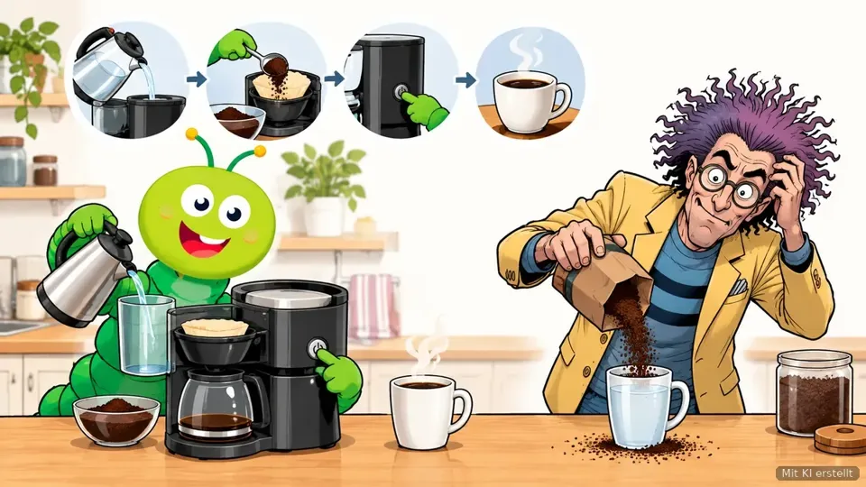

Der Montags-Wurm · 5. Oktober 2026
Wenn die Maschine den Chef ersetzt: Wer schreibt dann die Abläufe auf?
SALVE, diese Woche haben zwei große deutsche Firmen gezeigt, wohin die Reise geht: weniger Chefs, mehr Abläufe, die eine Maschine erledigt. Das klingt nach Zukunft. Es ist aber vor allem eine Frage, die du schon kennst: Weiß hier eigentlich jemand, wie das bei uns genau läuft?
1. Aktuelles aus dem Prozessmanagement
Prozessmanagement ist keine Nebensache mehr

Mit KI erstelltIn einer Umfrage der Beratungen BearingPoint und BPM&O nennen 83 Prozent der Befragten Prozessmanagement geschäftskritisch. Also: Wenn es nicht läuft, läuft die Firma nicht. 42 Prozent setzen dabei schon Programme ein, die Texte und Abläufe selbst erstellen können. 16 Prozent lassen sogar KI-Helfer Teile von Abläufen selbstständig steuern (BPM Pulse Survey 2026, März 2026).
Warum dich das betrifft: Die gleiche Umfrage nennt die Bremsen. Schlechte Daten, unklare Ziele und fehlendes Wissen verhindern, dass aus Versuchen echter Alltag wird. Eine Maschine kann nur einen Ablauf erledigen, den vorher jemand verstanden hat.
Handgriff der Woche
Such dir einen Ablauf, den du jede Woche machst. Schreib ihn in höchstens sieben Schritten auf. Steht hinter jedem Schritt genau ein Name? Wenn nicht, hast du das Problem gefunden, bevor es eine Maschine findet.
2. Märkte und Nachrichten
BMW und Telekom sparen an Abläufen
BMW streicht jede fünfte Spitzenstelle. Bis Mitte 2027 sollen rund 20 Prozent der obersten Führungskräfte gehen, etwa 100 Stellen. Als Grund nennt BMW ausdrücklich KI-Helfer, die Entscheidungswege verkürzen sollen. Welche Aufgaben die Maschinen genau übernehmen, bleibt offen (it-daily, 1. Oktober 2026).
Die Telekom will mit KI Milliarden sparen. Bis 2030 sollen es rund 2,5 Milliarden Euro pro Jahr sein, gerechnet gegenüber 2023. Ein Beispiel: Ein KI-Helfer im Netz erledigt eine Störungsprüfung jetzt in etwa einer Minute statt in Stunden. Über 100.000 Beschäftigte wurden im Umgang mit KI geschult (Telekom, 5. Oktober 2026).
Was das für dich heißt: Beide Firmen sparen nicht an der Technik, sondern an Abläufen, die vorher Menschen zusammengehalten haben. Wer seine Abläufe kennt und aufschreiben kann, wird wichtiger, nicht unwichtiger.
3. Zahlen und Erkenntnisse
Jede zweite Firma lässt schon eine Maschine mitarbeiten
- 54,5 Prozentder Unternehmen in Deutschland nutzen KI in ihren Abläufen, ein Jahr vorher waren es 40,9 Prozent. Am häufigsten geht es um Verwaltung, Schreiben und Planen (ifo-Umfrage über Markt und Mittelstand, Mai 2026). Ob die Maschine weiß, was sie tut, hängt an den Abläufen dahinter.
- 51 Prozentder Firmen tun sich mit der Digitalisierung schwer, 13 Prozent sehen sich sogar in ihrer Existenz bedroht. Größte Hürden: Datenschutz-Vorgaben (77 Prozent) und Fachkräftemangel (70 Prozent) (Bitkom, 604 befragte Firmen, März 2026). Es fehlt weniger an Technik als an Menschen, die wissen, wie es laufen soll.
- 2,6 MillionenAnrufe hat der Telekom-Sprachhelfer „Frag Magenta“ im ersten Halbjahr 2026 bearbeitet (Telekom, 5. Oktober 2026). Auch am Telefon arbeitet oft schon ein Ablauf, kein Mensch.
4. Sehenswert
Können wir ohne Arbeit leben? (ARTE, 29 Min.)
Aus der Reihe „42 – Die Antwort auf fast alles“, mit Untertiteln. Wir verbringen über sieben Jahre unseres Lebens mit Arbeit. Die Folge fragt, was passiert, wenn Maschinen immer mehr davon übernehmen, und ob bezahlte Arbeit nur eine kurze Phase der Geschichte war. Passt genau zu den Nachrichten dieser Woche und eignet sich gut für die Mittagspause. Der Link führt zur Reihe, dort die Folge „Können wir ohne Arbeit leben?“ wählen.
5. Aus der Lernwerkstatt
Was ist überhaupt ein Prozess?
Passend zu Demings Satz zeigt dir die Lektion „Was ist überhaupt ein Prozess?“ aus Stufe A1, wie du einen Ablauf so beschreibst, dass ihn jeder versteht. Erst dann kann eine Maschine sinnvoll mitarbeiten. Kostenlos und ohne Anmeldung. Themenwunsch? Tipp in der App unten auf „Mein Stand“ und dann auf „Feedback geben“.
6. Lied oder Kurzvideo der Woche
Lied: Im Takt der Maschine
Ein Lied vom Prozesswurm über Arbeit im Takt der Maschine, passend zur Frage, ob die Maschine den Chef ersetzt.
7. Zum Schluss: Ein Satz zum Mitnehmen
„Wenn du nicht beschreiben kannst, was du tust, als einen Ablauf, dann weißt du nicht, was du tust.“
Der Prozesswurm nickt und holt einen Zettel. Doktor Kuddelmuddel hält sich die Ohren zu und ruft: „Ich weiß sehr wohl, was ich tue. Ich kann es nur niemandem erklären.“
Dieser Newsletter erscheint weiterhin jeden Montag. Vielen Dank für deine Zeit. Feedback, Anmerkungen oder Themenvorschläge? Schreib mir gern an prozesswurm@gmail.com.
Dein Prozesswurm